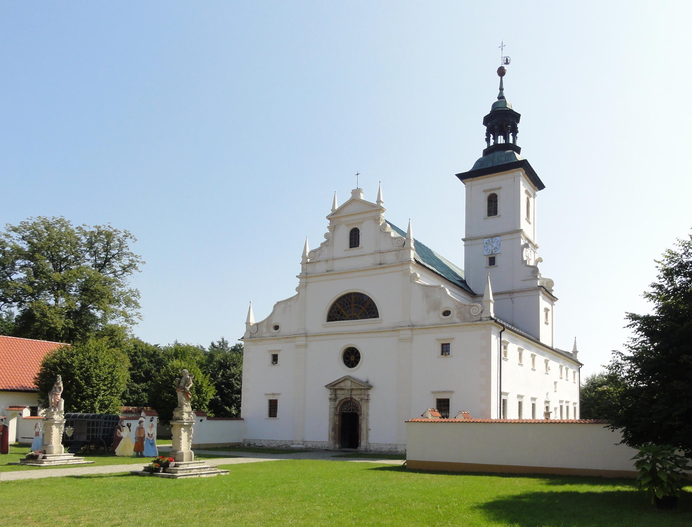

"Pustelnia Złotego Lasu" w Rytwianach
Konwent powołany do istnienia w 1624 roku z fundacji wojewody krakowskiego Jana Magnusa Tęczyńskiego i jego brata Gabriela, wojewody lubelskiego. Usytuowana w Rytwianach pustelnia, została skasowana w 1820 roku. Obecnie jest siedzibą Relaksacyjno-Kontemplacyjnego Centrum Terapeutycznego "SPeS". W 2018 r. wpisana na listę pomników historii w ramach akcji "100 Pomników Historii na stulecie odzyskania niepodległości".